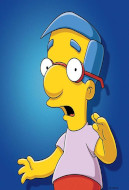

selecione um personagem
-

- 
Homer Simpson
Homer é o pai desajeitado e muitas vezes preguiçoso da família Simpson. Ele trabalha na Usina Nuclear de Springfield e é conhecido por sua personalidade divertida, mas às vezes burra. Homer é conhecido por sua paixão por cerveja, rosquinhas e pela expressão Doh!.